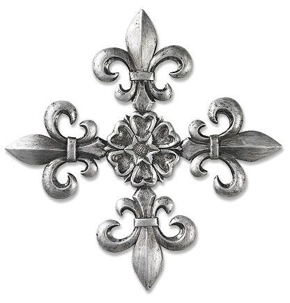
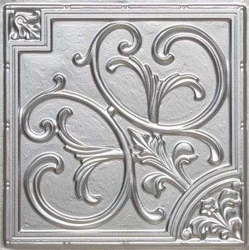
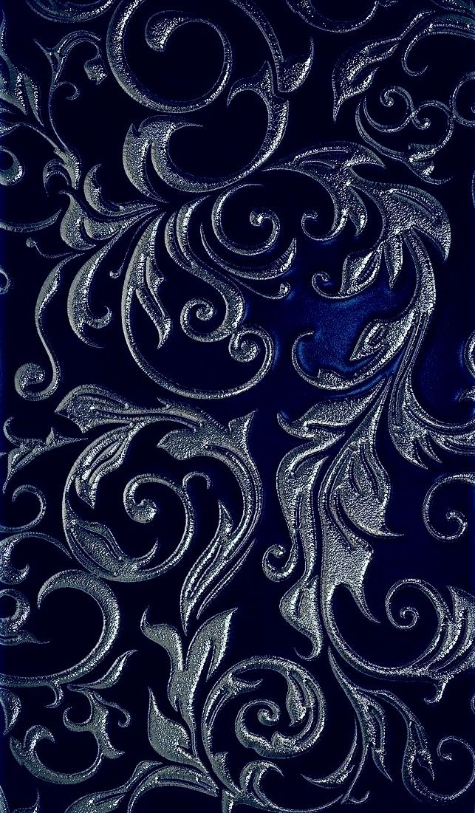

Hola, soy
Creo aplicaciones web y móviles escalables. Trabajo con Angular, Vue, NestJS, Spring Boot y soluciones Web3 en sistemas médicos y financieros.
Tocá cada nodo o usá las flechas ← → del teclado en la pantalla.
Entré al mundo de la programación y el diseño web. Empecé con cursos y fui aprendiendo conceptos hasta dar mis primeros pasos en diseño web con HTML y CSS. Después seguí con prototipos MVP de prueba.
HTMLCSSMVP
A mediados de 2023 quise estudiar Ingeniería en Sistemas y ahí aprendí Pascal. Lamentablemente no ingresé a la UTN de mi ciudad, pero no frené: me fascina la tecnología, y así entré a la carrera de Desarrollo de Software.
PascalDesarrollo de Software
Empecé mis primeros proyectos personales y trabajos de entrega de la carrera con Java, Spring Boot, Python, Flask, MongoDB y MariaDB. La carrera me siguió fascinando: hice cursos intensivos y seguí armando prototipos MVP en varios lenguajes. Aprendí no solo a construir sino también a desplegar, con Docker y configuración de pipelines.
JavaSpring BootPythonFlaskMongoDBMariaDBDockerCI/CD
Ese año me gradué de la Tecnicatura Superior en Desarrollo de Software (Instituto Barranqueras N° 161) y entré como Full Stack Jr. en Orbe Software Innovación S.R.L. (junio 2025 – marzo 2026). Conseguir trabajo me sirvió para conocer cómo es el ambiente laboral real. Como ya manejaba los lenguajes, me resultó fácil adaptarme a la construcción de los proyectos de la empresa, en sectores como salud, seguridad y servicios. Estos son los cuatro en los que trabajé:
Reddo · App web y móvil que conecta prestadores y clientes. Optimicé el flujo de registro sincronizando el estado local (Local Storage), eliminando recargas innecesarias y mejorando la retención de usuarios.
Angular 19IonicNestJSPostgreSQLFirebase Push
SaludApp · Sistema administrativo para centros médicos con control de acceso por roles (RBAC). Diseñé un panel gráfico estilo Business Intelligence para consultorios y secretaría, y sincronicé los turnos en tiempo real con WebSockets para evitar solapamientos.
Angular 19NestJSSocket.ioFullCalendarSwagger
Zentry App · Gestión de ingresos y reservas para complejos residenciales. Programé el flujo de check-in/out para visitas recurrentes y automaticé el despliegue en producción (Render/Railway) con pipelines de actualización automática.
Angular 18IonicExpress.jsSequelizeDockerGitLab CI/CD
OdontoSoft · SaaS para odontología. Lideré el rebranding y la estabilización de la plataforma de e-commerce interna y gestión de historias clínicas. Automaticé el despliegue continuo en GitLab y configuré pruebas automatizadas con PHPUnit.
Vue.js 3Laravel 11MySQLDockerPHPUnit
Sigo haciendo MVP en modalidad freelance, vendiéndolos a clientes cuando se presenta la oportunidad, y desarrollo proyectos personales de Web3. Tengo experiencia en sistemas médicos y financieros.
Si querés saber más sobre mi trabajo o te interesa contratarme, escribime por correo.
EscribimeLo que uso para llevar un proyecto desde la arquitectura hasta el despliegue final.
Soy Ana Santa Cruz, desarrolladora Full Stack con más de 3 años de trayectoria, apasionada por crear soluciones eficientes que combinan ingeniería de sistemas tradicional con tecnologías emergentes como Web3 y la automatización inteligente. Me enfoco en escribir código limpio, modular y centrado en la experiencia de usuario.
Implementé pipelines de CI/CD, sistemas de gestión en tiempo real con WebSockets y plataformas de administración médica. Trabajo con autonomía técnica, y tengo experiencia en Pair Programming y Code Review bajo marcos Scrum y Kanban.
+3 años
de trayectoria (2022 – presente)
Full Stack
Jr. en Orbe Software · 2025–2026
Graduada
Tec. Sup. en Desarrollo de Software · 2025
Inglés B1
British English Institute
Barranqueras, Chaco · anacesiasantacruz@gmail.com